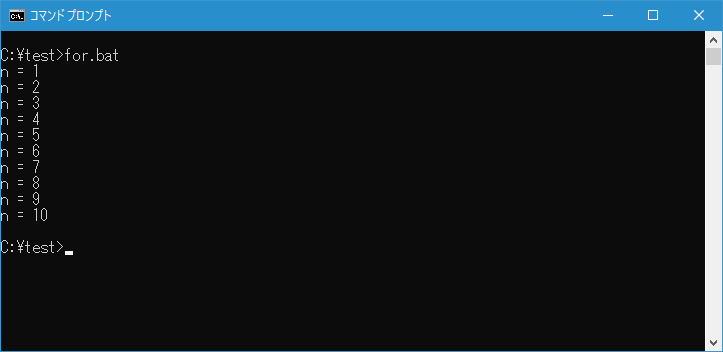
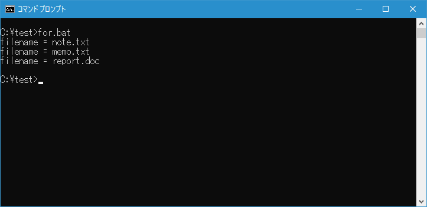
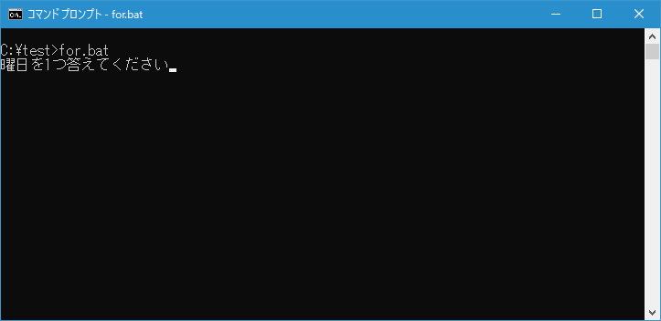
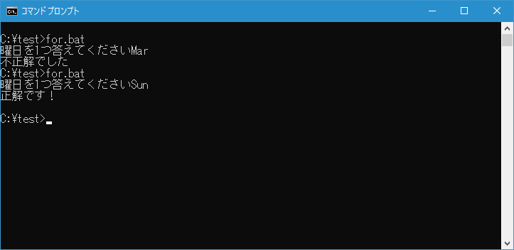
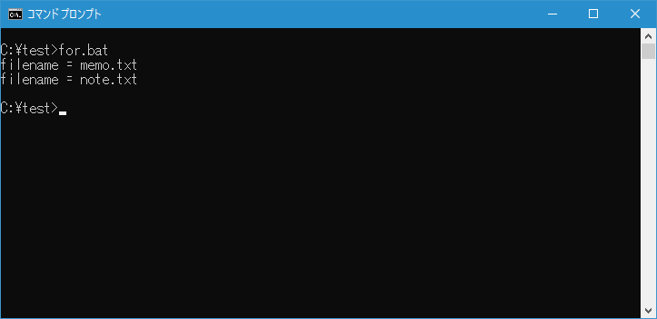
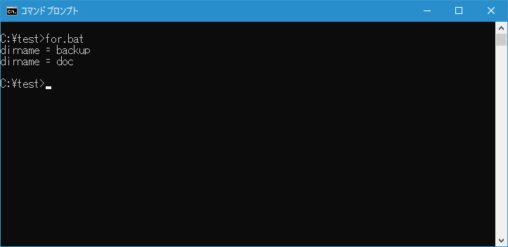
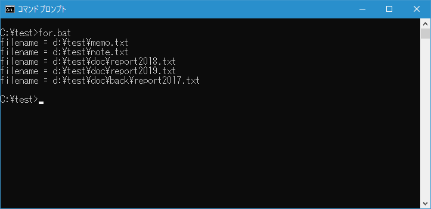
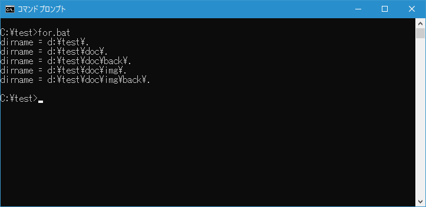

バッチファイルで繰り返し処理を使う(FOR)
バッチファイルでは FOR コマンドを使用して繰り返しコマンドを実行させることができます。ディレクトリ内にあるファイルの数だけ繰り返したり、指定した範囲で数値を変化させながら繰り返したりすることができます。ここでは FOR コマンドを使いバッチファイルの中で繰り返し処理を行う方法について解説します。
※ FOR コマンドを使ってテキストファイルの内容を読み込み、トークンに分割して繰り返し処理を行う方法については「テキストファイルの内容を区切り文字でトークンに分解し繰り返し処理を使う(FOR)」で解説しています。
目次
FORコマンドの使い方
FOR コマンドにはいくつか書式がありますが、基本となる記述方法は次の通りです。
FOR (オプション) %%変数 IN (セット) DO コマンド
繰り返し処理の流れは次の通りです。セットにはファイルの一覧や数値の範囲を指定します。ここから1つ値を取り出し、変数に設定してからコマンドを一回実行します。そして次の値をセットから取り出し同じように変数に設定してコマンドを実行していきます。セットから値を取り出し終われば繰り返し処理は終了です。
FOR コマンドの中で使用する変数は、コマンドラインで使用する場合は %変数 と記述し、バッチファイルの中で使用する場合は %%変数 と記述してください。変数名は任意のものではなく1文字のアルファベット(例えば n とか i など)を使います。大文字と小文字は区別されます。
実行するコマンドについては括弧()をつけて複数行に分けて記述することもできます。
FOR (オプション) %%変数 IN (セット) DO (
コマンド1
コマンド2
)
それでは繰り返し処理の記述の仕方をみていきます。
数値を変化させて繰り返す
最初に数値を開始から終了まで変化させて繰り返しを行う方法です。次の書式を使います。
FOR /L %%変数 IN (開始,ステップ,終了) DO コマンド
セットには開始する数値、終了する数値、そして変化させる数値を指定します。例えば1から初めて10まで1つずつ変化させる場合は (1,1,10) となります。
(1,1,10) の場合
1,2,3,4,5,6,7,8,9,10
また8から初めて20まで2つずつ変化させる場合は (8,2,20) となります。
(8,2,20) の場合
8,10,12,14,16,18,20
テストを行うために次のような簡単なバッチファイル for.bat を c:\test に作成しました。
@echo off
for /l %%n in (1,1,10) do (
echo n = %%n
)
バッチファイルを実行すると変数 n に1から10までの数値を順に格納しながらコマンドを実行します。

指定した複数のファイル名の分だけ繰り返す
指定した複数のファイル名を順に変数に格納しながら繰り返しを行います。オプション無しの次の書式を使います。
FOR %%変数 IN (セット) DO コマンド
セットには複数のファイルを記述します。区切り文字としては半角スペース、カンマ(,)、セミコロン(;)、等号(=)が使用できます。
テストを行うために次のような簡単なバッチファイル for.bat を c:\test に作成しました。
@echo off
for %%f in (note.txt memo.txt report.doc) do (
echo filename = %%f
)
バッチファイルを実行すると変数 f に指定したファイル名を順に格納しながらコマンドを実行します。

-- --
ワイルドカードを使用せずにファイル名を指定した場合は、セットに指定した文字列を順に変数に格納しながら繰り返しを行っているだけなので、セットに記述するものはファイル名ではなく単なる文字列でも構いません。
テストを行うために次のような簡単なバッチファイル for.bat を c:\test に作成しました。
@echo off
set answer=
set /p answer=曜日を1つ答えてください
for %%f in (Sun Mon Tue Wed Thu Fri Sat) do (
if %answer%==%%f (
echo 正解です！
goto end
)
)
echo 不正解でした
:end
バッチファイルを実行すると質問が表示されてユーザーからの回答待ちになります。

繰り返し処理のなかで、IF コマンドを使って入力された値とセットに指定した文字列と順に比較します。一致するものがあればメッセージを表示して終了します。最後まで一致しなかった場合は別のメッセージを表示して終了します。

IF コマンドの使い方については「バッチファイルで条件分岐を使う(IF)」を参照されてください。
カレントディレクトリにあるファイルの分だけ繰り返す
先程は複数のファイルを列挙して指定しましたが、カレントディレクトリにあるワイルドカードを使って指定したファイルを順に取り出して繰り返し処理を行うこともできます。
FOR %%変数 IN (セット) DO コマンド
例えばカレントディレクトリにある拡張子が .txt のファイルを順に取り出して繰り返しを行うには次のように記述します。
FOR %%変数 IN (*.txt) DO コマンド
テストを行うために次のような簡単なバッチファイル for.bat を c:\test に作成しました。
@echo off
for %%f in (*.txt) do (
echo filename = %%f
copy %%f c:\test\backup > nul
)
バッチファイルを実行すると、カレントディレクトリにある拡張子が .txt のファイルを変数 f に順に格納しながらコマンドを実行します。今回はファイル名を画面に出力し、その後で指定したディレクトリにファイルをコピーしています。

カレントディレクトリにあるディレクトリの分だけ繰り返す
カレントディレクトリにあるワイルドカードを使って指定したディレクトリを順に取り出して繰り返し処理を行うこともできます。
FOR /D %%変数 IN (セット) DO コマンド
例えばカレントディレクトリにある d から始まるサブディレクトリを順に取り出して繰り返しを行うには次のように記述します。
FOR /D %%変数 IN (d*) DO コマンド
テストを行うために次のような簡単なバッチファイル for.bat を c:\test に作成しました。
@echo off
for /d %%d in (*) do (
echo dirname = %%d
)
バッチファイルを実行すると、カレントディレクトリに全てのサブディレクトリをを変数 d に順に格納しながらコマンドを実行します。

サブディレクトリに含まれるファイルも含めて繰り返す
指定したディレクトリに含まれるファイルに加えてサブディレクトリに含まれるファイルを含めてワイルドカードを使って指定したファイルを順に取り出して繰り返し処理を行うこともできます。
FOR /R [[ドライブ:]パス] %%変数 IN (セット) DO コマンド
パスを指定した場合はカレントディレクトリが対象となります。例えば D:\test ディレクトリにある拡張子が .txt のファイルを順に取り出して繰り返しを行うには次のように記述します。
FOR /R D:\test %%変数 IN (*.txt) DO コマンド
テストを行うために次のような簡単なバッチファイル for.bat を c:\test に作成しました。
@echo off
for /r d:\test %%f in (*.txt) do (
echo filename = %%f
)
バッチファイルを実行すると、指定したディレクトリおよびサブディレクトリにある拡張子が .txt のファイルを変数 f に順に格納しながらコマンドを実行します。

-- --
この書式を使う場合、セットにピリオド(.)だけを指定すると、対象のディレクトリを起点としたディレクトリツリーの情報が変数に格納されながら繰り返しが行われます。
テストを行うために次のような簡単なバッチファイル for.bat を c:\test に作成しました。
@echo off
for /r d:\test %%d in (.) do (
echo dirname = %%d
)
バッチファイルを実行すると、指定したディレクトリおよびサブディレクトリのディレクトリ名を変数 d に順に格納しながらコマンドを実行します。

-- --
FOR コマンドを使ってバッチファイルの中で繰り返し処理を行う方法について解説しました。
( Written by Tatsuo Ikura )

著者 / TATSUO IKURA
初心者～中級者の方を対象としたプログラミング方法や開発環境の構築の解説を行うサイトの運営を行っています。